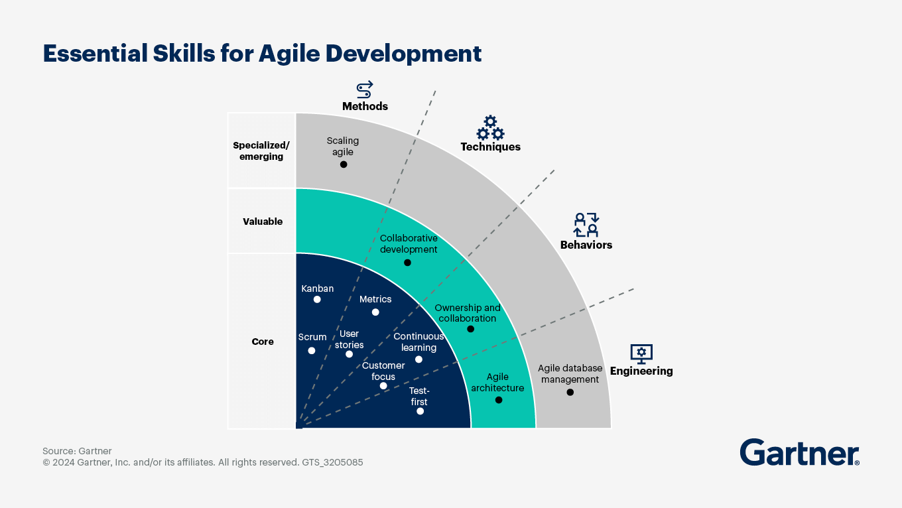
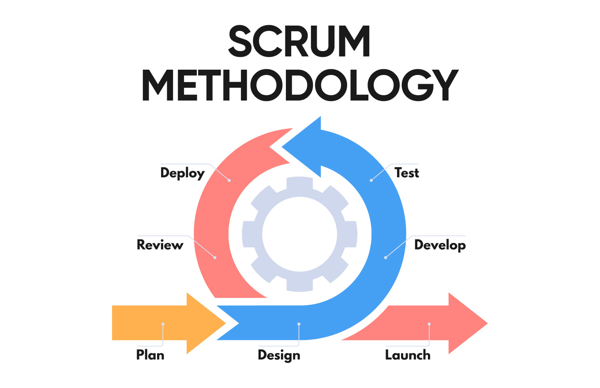

Agiilne meetod on viis läheneda projektijuhtimisele mis lõpp saatuseks on sujuv ja effektiivne meeskonna töö
ja projekti lõpp saatus. See on tugiks ettearvamatuse reageerimisele mis tavaliselt tarkvaras tuleb kaasa.
Selle meetodiks kasutakse sprinti ja scrumi, milles kasutakse iteratiivseid tööjärjestusi(sprint).
Neli tähtsamd alustala agiilse arendsalas on:
Isikud ja suhtlus - ilma suhtlusega, ei toimi mingi protsess
Töötav tarkvara - klienti rahuoluks, peaks olema töötav tarkvara kätte saadav nii kiiresti kui võimalik,
klienti usaldust võidab ainult siis kui iga nädala tagant saab tarkvara mis on uuendatud, mitte pikka kavandit
Koostöö kliendiga - kliendi soovid on tugi projektile, kui klient ei ole rahul , ei ole tuleviku
Reageerimine muutusele - kui klient järsku tahab kassi asemele kalapulka, siis tiim peab aktsepteerima
muutustele isegi kui see on vaimselt valus
10 tähtsad printsiip mis võiks teada
| Saab | Ei saa |
|---|---|
| Muutuva nõutega projektiga | Stabiilsed ja fikseeritud projektiga |
| Kiiret reageerimist vajav projektiga | Karmidega regulatsiooni projektiga |
| Keerulistes ja uutes valdkonnas | Suure eelarve riskiga avaliku sektori projektiga |
| Kui klient/tellija on kaasatud | Kui puudub tellija/klient |
| Meeskonnades kus rollid on paindlikud | Meeskond pole kooskõlas omavahel |

Arendustsükkel:
Plaani
Disaini
Arenda
Testi
Võta kasutusele
Hinda
Avalda
